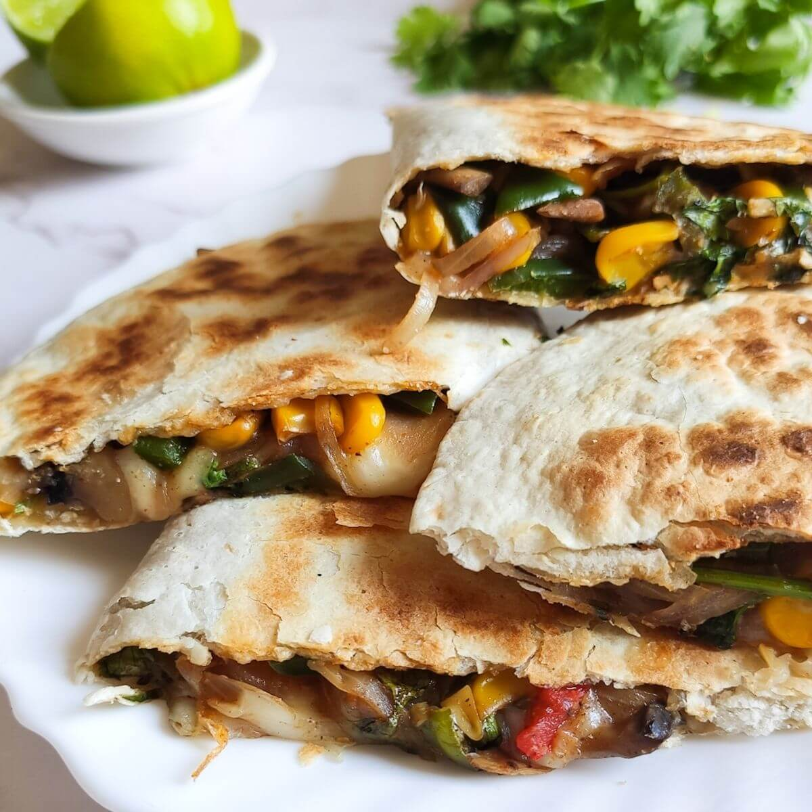

Cheesy Vegetable Quesadilla

Get ready for a mindblowing recipe. Delicious quesadillas with cheese and steamed vegetables like broccoli, carrot, bell pepper and mushrooms.
Ingredients
- 1 zucchini, cubed
- 1 head fresh broccoli, chopped
- 1 red bell pepper, chopped
- 1 carrot, chopped
- 1 yellow onion, chopped
- 4 small button mushrooms, chopped
- 4 (10 inch) flour tortillas
- 1/2 cup shredded sharp Cheddar cheese
- 1/2 cup shredded Monterey Jack cheese
Steps
- Preheat oven to broil. Line a baking sheet with aluminum foil.
- Place zucchini, broccoli, bell pepper, carrot, onion and mushrooms in a steamer over 1 inch of boiling water, and cover. Cook until tender but still firm, about 2 to 6 minutes. Drain.
- Place two tortillas, side by side, on the prepared baking sheet. On each tortilla layer cheddar cheese, vegetables, then Monterey jack cheese. Top each with another tortilla.
- Place under the broiler and cook until lightly browned. Carefully turn tortillas and cook on the other side until lightly browned.